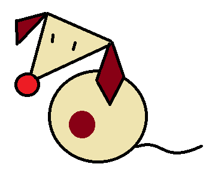
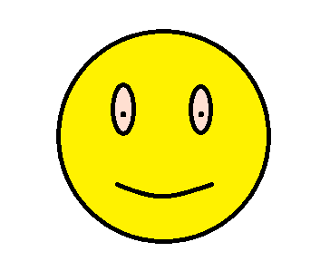

Buddy: dogPT (Online)
Room: CS3240-reflections

dogPT:
Alright human, lets make haste and get right into the weeds, what do you like and dislike about CS3240?

Dislikes?
You:
Likes? It forces me to learn about design.
Dislikes?
dogPT:
Speaking of real, I noticed your notebook has a recurring dog mascot. What’s up with that?
You:
Originally, it was a joke. But later I realised having a character actually fits into what we covered in Week 9 about emotional design and user engagement. The dog became a narrative anchor, like a tiny avatar representing “confused user energy.” and also serving as the character shown on the hardware product. It kept the tone light, but it also helped me think about how design can be playful, it also allows users to feel attachment to the product, to fulfill one of my task requirements.
dogPT:
What was going on with your sketches for the individual projects?
You:
For the hardware part, the bitmap sketches were basically me fighting with low resolution. I had to simplify everything using Gestalt principles of similarity, simplicity, proximity, because any visual noise instantly becomes unreadable. So the neutral/hot/cold icons had to be recognisable with like 20 pixels each. I think I did ok for what I am limited to, using motion to represent the various states I think is helpful. I also try to introduce expressions on the screen within the dog avatar, but I think it is a little hard to show through.
One learning point from it is to make the screen a little larger, this is to allow me as a designer to have more screen estate to express, and for the users to see the screen better.
dogPT:
What about the group projects?
You:
For me, the sketching exercises for the group project was rather difficult, because I feel like I am set on a certain design, and trying to iterate over my previous design feels difficult, especially when trying to improve. I don't think I have an eye for design, as I am mainly a utility person, which thinks "if it works, does not need to look nice", which I think is a huge flaw in design.
But, with discussions with my groupmates, they really help in providing various perspectives and help me in getting better at my visual design aspects.
dogPT:
Alright, let’s talk mess-ups. What did users struggle with in the group project?
You:
A couple things. We assumed alot during our design process, which lead to many problems, the spacing was messy at first, violating Gestalt proximity; some elements looked clickable even though they weren’t, so false affordance; and the finalise button didn’t show its state, so we broke visibility of system status and error prevention. We fixed those after applying heuristic evaluation from Week 11, conducting user evaluation, we were able to find certain flaws in the application and make great improvements in our initial designs.
dogPT:
And what did you learn from all this?
You:
I learned that design is less about “making nice screens” and more about utilising design to translate messy human behaviours into structured decisions. I also learned that constraints, whether in Figma or hardware, are not obstacles; they allow creativity to flourish. And iterative feedback actually matters.
dogPT:
Do you have any existential crisis during this course?
You:
You know, I was take a walk one day. I wonder, why do people create new apps? What is the use of designs when people create new apps? To generate revenue, but how? To spread a product widely, and then enable certain behaviours in the users, like making them dependent on this behaviour, like Uber, Grab, or these gig economy type services. This appears to be good, on the surface, more people getting revenue in turbulent social economic landscape during the COVID period. But, it is a symptom to a deeper underlying issue of the unstable and neoliberalisation of the economy, where people would resort to unstable income source, which was generated from a consumeristic behaviour born from this applications, designed for consumers to pay more and to underpay the actual gig workers. Sure, some may say its dark design, but this has become an industry standard, to expand as quickly as possible and then find ways to generate revenue, leading to newly terms "encrapification" of technology.
Coming back to this course, I wonder, if by partaking in this class, as a potential future Software Engineer, would I be complicit in making such terrifying cycles in the human consumer behaviour. Taking the course made me realise, how similar design in the new age is similar to fast fashion. Product is designed, human behaviour is changed, then a new design happens, this existing old design is discarded. Especially in the advent of AI, how can I, someone who is aware of the design choices of applications, reconcile with how these designs are changing human's relation with technology. Likened to Cassandra, in the post truth era, would warnings of specialists regarding designs fall on deaf ears before its too late?
To sustain software lifecycles, there would be endless cycles of growth and consumption, as companies nowadays do not care for workers.
Anywhos.
dogPT:
Last question. If you had to sum up your whole CS3240 experience in one line?
You:
Design is trying to play on human's behaviour to enable a process or a task, repeated refinements done until users stop being confused.
dogPT:
Noice, you may pet me now.